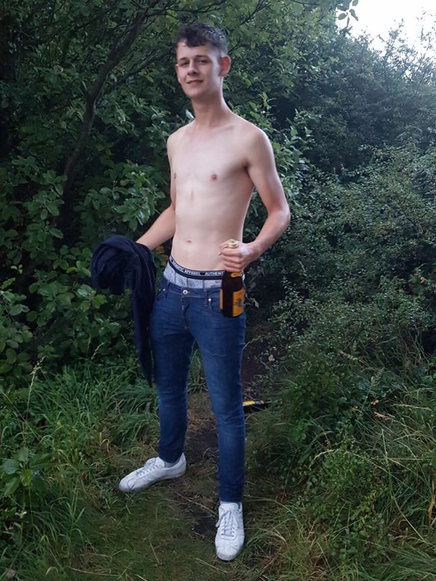
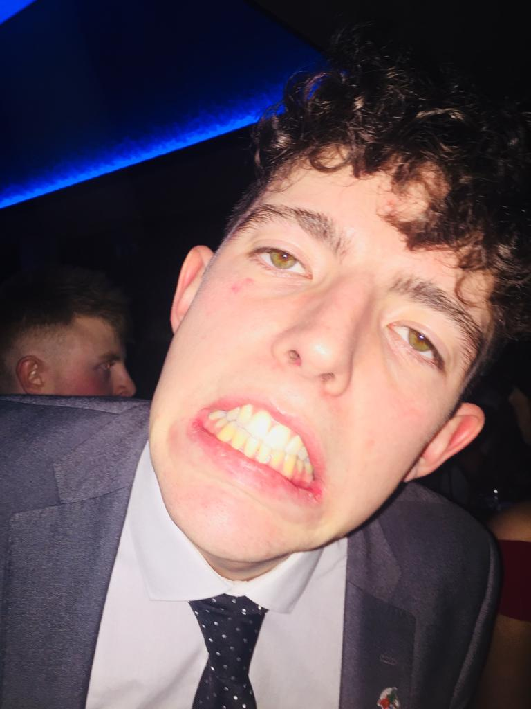
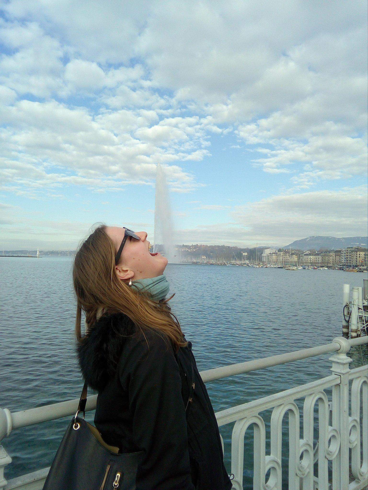
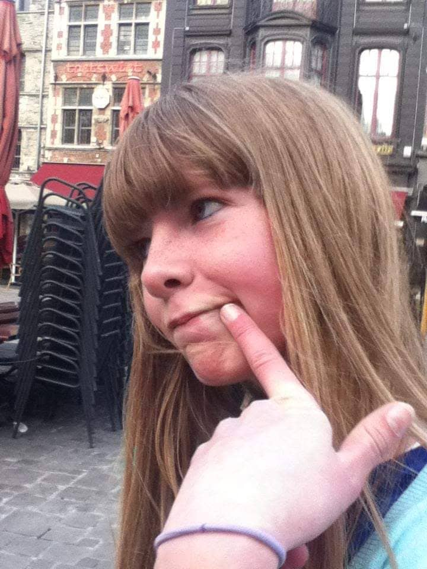
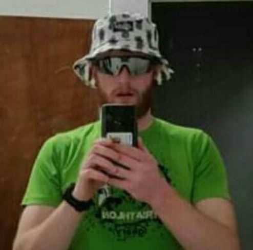
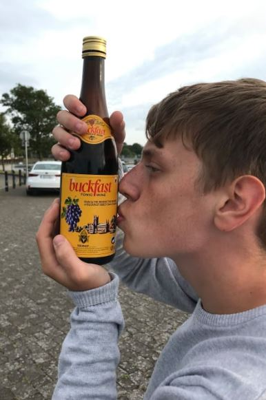
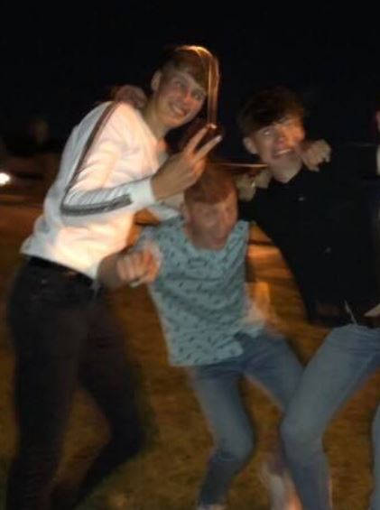
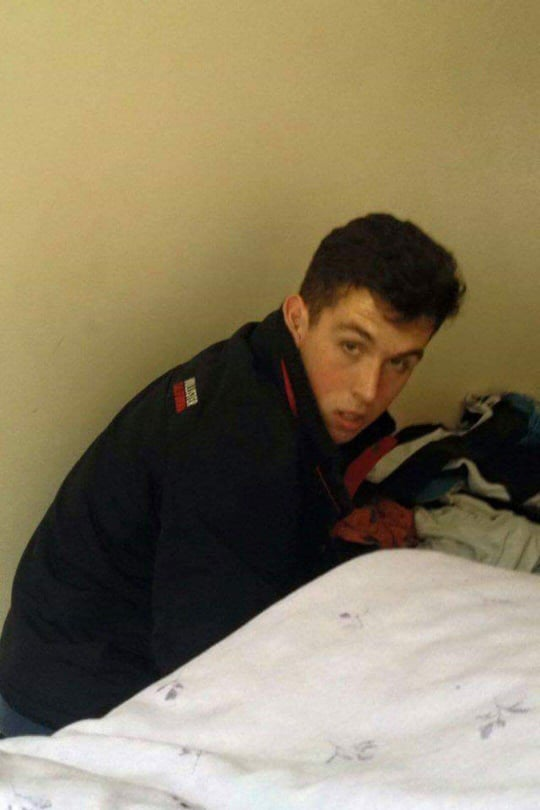

Ewall 'Lebron' Tuite
Age:22
Weight: 95 - 105kg (Depending how deep into Pot week I am)
Height: 5'11 (6ft on nights out)
Bio: Reigning ARCC Champ.
Will happily drink cans until I die, just for the laugh.
Bless up SJ.

Sorcha O'Donnell
Age: 20
Weight: Big Lad
Height: 5'8
Bio: Getting roasted by Sandra is my forté
Front Door is like my family
The birds work for the bourgeoisie

Conor Flynn
Age: 22
Weight: 100kg
Height: 6'7
Bio: Bollix
Reigning softest man on the pub crawl each year
Certified shitetalker

Scoobai
Age: 1M in dog years
Weight: 12kg
Height: 2ft
Bio: Club mascot.
Literally made shit of the slip last year.
Responds to rhetorical questions such as: Who is a good boy?

Blaney
Age: 22
Weight: 0kg
Height: 5'9
Bio: Threatened to sue over photo even though this is for charity.
Big Boris Johnson fan.
Loves a clean home

Aaron
Age: 20
Height: 5'9
Weight: 75kg
Bio: Big Gaymo wannabe. No one understands what I say ever.
Not a good gatter. Just here for a good time.
I work in a gay bar. Nathan Duffy can’t Minecraft

Aisling
Age: 24
Height: 5'6
Weight: Fat Lightweight
Bio: Won S4- without knowing how to feather my blade.
Zodiac sign is cancer.
Reigning ARCC champion cox.

Rooney
Age: 18
Height: 5'10
Weight: 75kg but look like 85kg
Bio: Interior designer from Killarney
Moved to the big smoke of Galway to be closer to my life partner, Marcussssss

Lisa
Age: 20
Height: Extra Medium
Weight: Before or after my lasagne and garlic bread?
Bio: Human embodiment of the devil himself.
Find me in the Bialann skipping lectures or napping in Wellpark (I don’t work for the man). In my opinion solid navy onepieces are most flattering, change my mind
Big Davo
Age: 20
Height: 6'4
Weight: 93kg
Bio: If you blink twice or stutter I’ll assume you’re spoofing. Getting
fat is easy don’t make excuses as I’ve heard it all, just do it! Pm
me for special shell work for filippi boats. I only carry out this work in Seville.

Nuala
Age: 75
Height: 5'12
Weight: 57.5kg
Bio: Newfound pioneer.
Enjoy a bit of coronation street while all my friends go gatting.
I have a Union Jack tramostamp.
Gerry
Age: Twenny
Height: Taller than Kai
Weight: 90kg or 160 pints of Guinness
Bio: Tried the rowing craic for a bit, but couldn’t deny my true calling of becoming Ireland’s Greatest Pintman.
Find me in the Buskers smoking area on any given Saturday.
I’ll drink you all under the table if I have to.
ARCC 2017 - Stunt of the Year
ARCC 2018 - Best Gatter

Megan
Age: 20
Height: Pythagorean
Weight: Lightweight with 3 days advanced notice.
Bio: Nothings tastes as good as winning club 4 feels.
If you want to tag me in photos you have to speak to my lawyers first. I may not look it, but I’m from limerick

Cociane
Age: 18
Height: 6'2
Weight: 78kg
Bio: Wannabe hard gatter
Has a 50% success rate of getting into the Roisin
Exactly what it says on the tin

Rachel
Age:
Height:
Weight:
Bio:

El Capiân
Age: 21, but the order of the number depends on the situation
Height: 7'90
Bio: Big family man. I was a fan of Carbon in a previous life, but I’ve come to terms with my age and now reside in
Buskers (Rollie Lane mostly). Sometimes we choose the road we follow. And sometimes the road chooses us.
Past winner of the ARCC although some doubt the nature of the win; but idgaf cause I’m a winner.
For me, success is getting what I want; but happiness is wanting what I get. Big fan of wine (made by monks or the
Alidi lady idm). Mushrooms and too little salt on my scran are big dislikes.

Siuin
Age: 22
Height: 5'7
Weight:
Bio: Can crush a watermelon between my quads.
Peanut butter makes everything taste better.
Will sell you a bag of sycamore leaves on tic

Niamh
Age: 20
Height: 5'8
Weight:
Bio: Claregalway is the Jerusalem of Ireland
Mam bought my naggin
When the cats away the mice will play

Ciara
Age: 20
Height: We could not take Ciara's height measurements because she never gets off her knees.
Weight: 34D
Bio: Full of myself but still hungry

Renee
Age: 16
Height:
Weight:
Bio:

Single Sadhbh
Age: 22
Height: Taller than the bouncer in the front door that’s for sure
Weight: 34D
Bio: UCDo me?

Fiona
Age: 24
Height: 4'35
Weight: Back so heavy from carrying Single Sadhbh's fat ass to 3 championships
Bio: Can I get uhhh 2 numba 9s a numba 9 large, a numba 6 with extra dip, a numba 7, two numba 45s, one with cheese, and a laaarrrggee soda

Dirty Ailbhe
Age: 23
Height: 5'9
Weight: Heavy from carrying the entire Jes school on my back!
Bio: I've been a bad bad girl
Keep washing my hands but they're still so filthy
Men ain't shit. #hotgirlsummer WeAreTheJes

Alison
Age: 21 years younggg
Height: Quite small but a real terrier.
Weight: 69kg (haha no really)
Bio: The turbotastic tullamore terrier will tear you to shreds if you touch her bow seat
Loves a chip after a night out.
Shifted caoimhin twice even tho she’s gay for Nuala

Cliodhna
Age:
Height:
Weight:
Bio:

Whittle
Age: Questionable
Height: 6'2
Weight: 70kg
Bio: Coupe was the highlight of my life
Enjoy a good spreadsheet
Will be competing as a para rower due to being hopelessly blind
Got butchered in the first round of the ARCC 2018

Nathan
Age: 18
Height: 173cm
Weight: 73kg
Bio: Was almost a school shooter. Mad for a cheeky one. Guaranteed to come out at an hours notice. Aaron Anderson is a cuck, go back to Scotland

Sean
Age: 19
Height: 6'3
Weight: 72kg
Bio: Religious: Jeremiah 15:4 “Power to weight ratio matters” Isaiah 5:17 “Ergs don’t float”

BK
Age:
Height:
Weight:
Bio:

David
Age:
Height:
Weight:
Bio:

David
Age: 22
Height:5'11
Weight: 79kg
Bio: